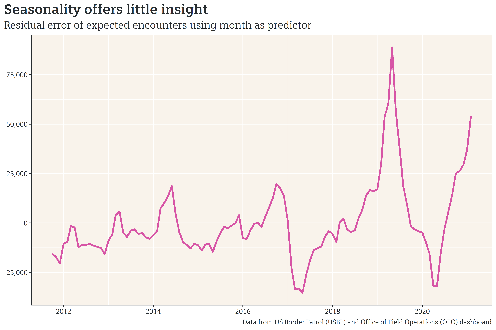

Examining the Data
The US Border Patrol (USBP) publishes monthly data summarizing the number of encounters/crossings at the Southern border. Since November of 2020, border crossings have increased monthly, from about 70,000 in November to a little over 100,000 in February.
Looking at the long term monthly data, however, reveals two key aspects:
- 2019 was an exceptionally high year for crossings, and 2021 is on track to have a similar number of crossings;
- There seems to be a cyclical set of peaks and troughs in annual border crossing numbers.

Looking at the chart above, it’s difficult to determine which months correspond to peaks and troughs. Aligning by month offers a clearer picture of how monthly border crossings in each year compare to other years.
From this chart, it does appear that there is some semblance of a monthly pattern, albeit with extreme outliers of 2019, 2020, and 2021. Appearances, however, can be deceiving, and a mathematical model can help distinguish signal from noise. Using month as a predictive input, we can create a model that estimates the expected number of crossings in said month. If we look at the residual error (the actual number of crossings minus the predicted number of crossings) over time, we can get an idea of how well the model is performing. If seasonality is a good predictor of the number of border crossings, the model will accurately account for seasonal shifts, and the residual error plot would be expected to remove or reduce the “waviness” that appears in the crossing plot and only show the long term trends.

Plotting the residual error, however, doesn’t filter out seasonal noise. In fact, apart from the y-axis shifting down, the residual plot is strikingly similar to the crossings plot. This means that the month offers little power on its own in predicting the number of border crossings.